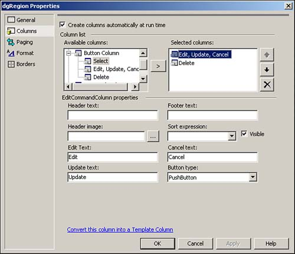
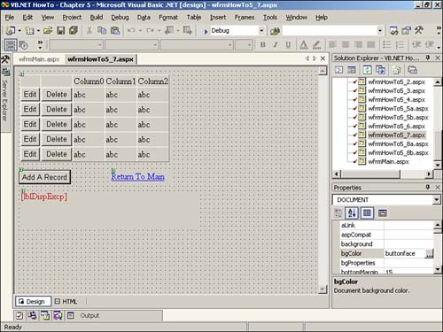

Note
Be sure to leave the Create Columns Automatically at Run Time check box checked. Unless you specify other columns or have the data loaded at run-time, you will end up with just the buttons, which would be pretty boring. |
The Table controls and DataRepeater are fine when I have small sets of data, but the display just keeps going on and on, and I have to write a bunch of code to change the sort order of the data. How do I create a table-like display that will show a set number of rows at a time and let me sort the data?
One of the nice things about the DataGrid control that makes it so much more powerful than the other list controls is its ability to add, edit, and delete directly within the control. This How-To shows you how to create columns to manage your data using the DataGrid control.
You will use the DataGrid control with more code this time so that you can work with data more. You will also be adding a couple of buttons to the DataGrid display to allow you to edit, delete, and update data.
You will add buttons to the data grid by right-clicking on the control, choosing Property Builder, and then choosing the Columns tab. You can then select from the list of button types (see Figure 5.12).

Note
Be sure to leave the Create Columns Automatically at Run Time check box checked. Unless you specify other columns or have the data loaded at run-time, you will end up with just the buttons, which would be pretty boring. |
After you have selected to include buttons in the data grid, you not only have to add the code to the events for the specific buttons, but you also have to make sure that ASP.NET knows the events to use. You can do this in a couple of ways.
One way is to set the AutoEventWireUp attribute of the page to True. You can see this attribute in the first line of the Web page. By default, the attribute is set to False.
After you add the buttons to the data grid, you will see the buttons in the DataGrid control.
<%@ Page Language="vb" AutoEventWireup="false" Codebehind="wfrmHowTo5_7.aspx.vb" Inherits="VB.NET__Chapter_5.wfrmHowTo5_7"%>
However, a couple of disadvantages result from setting the AutoEventWire:
You have to use the required names for your events.
Events sometimes end up being called twice on the form.
Microsoft recommends not setting the AutoEventWireUp to True.
The other alternative is to add the events and HTML tags yourself. You will see the HTML code added in step 3.
Another option that is introduced in this How-To is the fill of a data table by using the FillSchema method of the data adapter. This means that the data table will be smart and know what the constraints and properties of the columns are before you try to save the data back to the server. The big benefit with using the FillSchema method with the DataGrid control is that it will be intelligent, and it won't let a user try to edit an auto increment column, such as an identity column. It will make such a column disabled.
When you update the columns from the data grid back into the data table, you can also check to see if the column's AutoIncrement property is True. Unless you use the FillSchema method, the AutoIncrement property will come back False, even if the actual column in the table on the server has it set to True.
In addition to the FillSchema method of the data adapter, you will also use the Update method, which will call the Update, Delete, or Append statement, depending on the task that is being performed.
The CommandBuilder object will generate your SQL statements used to send modifications back to the server.
In addition to the methods mentioned for the data adapter, you will use some properties and methods of the data table to add, edit, and delete data. You can see a list of those objects, properties, and methods in Table 5.10.
|
Object |
Property/Method |
Description |
|---|---|---|
|
DataTable.Rows |
Delete |
Deletes a row from the DataTable object (the data is not deleted from the server at this point). |
|
DataTable.Rows |
Count |
Returns the number of rows that are currently in the DataTable object. |
|
DataTable |
NewRow |
Creates a new DataRow object. |
|
DataTable.Rows |
Add |
Adds the DataRow object to the DataTable object. |
|
DataTable |
BeginLoadData |
Turns off the schema checking that occurs when you're adding the new row to the DataTable object. |
|
DataTable |
AcceptChanges |
Resets the DataTable status, including ending edits on DataRow objects. The DataRowState also changes. All added and modified rows become unchanged, and deleted rows are removed. |
|
DataTable |
RejectChanges |
Rejects the changes made since the last AcceptChanges was called. Lets you roll back changes if errors occur. |
Open and run the Visual Basic .NET-Chapter 5 solution. From the main page, click on the hyperlink with the caption How-To 5.7: Add, Edit, and Delete Data Using the DataGrid Control. You will then see all the regions loaded into a data grid. You can click on the Edit button to edit data, and so on. You can see the form created in Design view in Figure 5.13.
Create a Web Form. Then place the controls in Table 5.11 and Figure 5.13 with the following properties set. Don't worry about the Edit and Delete buttons displayed until the next step.
|
Object |
Property |
Setting |
|---|---|---|
|
DataGrid |
ID |
dgRegion |
|
Button |
ID |
btnAdd |
|
Label |
ID |
lblDispExcp |
|
ForeColor |
#C00000 |
|
|
HyperLink |
ID |
hplReturnToMain |
|
NavigateURL |
wfrmMain.aspx |
Right-click on dgRegion, and choose Property Builder from the pop-up menu. Click on the Columns tab. You are going to add Edit, Update, Cancel (one button choice), and Delete buttons, as displayed in Figure 5.12. Change the ButtonType of each button to PushButton. After you have selected the buttons, click OK.
Now it's time to add the HTML code to connect the buttons to some code you will add in the following steps. In Listing 5.23, you can see the final HTML for the DataGrid control. The lines of code that you will need to add are the ones for OnUpdateCommand, OnCancelCommand, OnEditCommand, and OnDeleteCommand. By entering these lines as they are listed and creating the events as named, your code will work for the buttons in the DataGrid control. You will then add code behind in the following steps that will match these commands.
<asp:datagrid id="dgRegion" runat="server" Width="254px" Height="111px"
OnUpdateCommand="dgRegion_UpdateCommand"
OnCancelCommand="dgRegion_CancelCommand"
OnEditCommand="dgRegion_EditCommand"
OnDeleteCommand="dgRegion_DeleteCommand"
>
<Columns>
<asp:EditCommandColumn ButtonType="PushButton"
UpdateText="Update" CancelText="Cancel" EditText="Edit">
</asp:EditCommandColumn>
<asp:ButtonColumn Text="Delete" ButtonType="PushButton"
CommandName="Delete">
</asp:ButtonColumn>
</Columns>
</asp:datagrid>
Now it's time to add some Visual Basic code. In the class module behind the Web Form, add the following line of code just after the region that says Web Form Designer Generated Code. mdtRegion will be used throughout the form for managing the data and synchronizing with the data grid. mdtRegion will also be saved to the Session object (called RegionDT) for round trips to the server and back. You will see this in the next step.
Dim mdtRegion As New DataTable()
Add the code in Listing 5.24 to the Load event of the Page. The task that occurs is checking for the existence of RegionDT in the Session object. If it exists, then this is a round trip, and you don't need to reload the data from the server. If it doesn't exist, then the Region table Schema is supplied using the FillSchema method, and then the DataTable object is filled. Next, the RegionDT and IsAdding Session variables are saved. The IsAdding session variable is used to track whether you are adding a record. Last, the data is bound to the DataGrid object using the BindTheGrid routine, which follows the Page_Load event in this listing.
Private Sub Page_Load(ByVal sender As System.Object,
ByVal e As System.EventArgs) Handles MyBase.Load
'Put user code to initialize the page here
If (Session("RegionDT") Is Nothing) Then
Dim odaRegion As OleDb.OleDbDataAdapter
odaRegion = New _
OleDb.OleDbDataAdapter("Select RegionID as [Region ID], " &
"RegionDescription as Region From Region", _
BuildCnnStr("(local)", "Northwind"))
odaRegion.FillSchema(mdtRegion, SchemaType.Source)
odaRegion.Fill(mdtRegion)
Session("RegionDT") = mdtRegion
Session("IsAdding") = False
BindTheGrid()
Else
mdtRegion = CType(Session("RegionDT"), DataTable)
End If
End Sub
Sub BindTheGrid()
dgRegion.DataSource = mdtRegion
dgRegion.DataBind()
End Sub
Tip
To figure out when the page is going back to the server, put a break point in the Page_Load event code. Then you can see the code break whenever you go back to the server. If you note which routine you were in before you went back to the server, you can then place code in it to save any data you need to. |
Create the dgRegion_EditCommand routine as shown in Listing 5.25. This is one of the events specified in step 3. This code sets the EditItemIndex of the DataGrid object to the selected item and then binds the data.
Sub dgRegion_EditCommand(ByVal sender As Object, _
ByVal e As DataGridCommandEventArgs)
'-- Clear the error display
lblDispExcp.Text = ""
'-- Turn on the editing by pointing the EditItemIndex
' to the ItemIndex
dgRegion.EditItemIndex = e.Item.ItemIndex
BindTheGrid()
End Sub
Add the code in Listing 5.26 to the Click event of btnAdd. The first task is to invoke the BeginLoadData method for mdtLookupData. This turns off constraint checking while you're loading data. You should turn this off so that it doesn't check for required fields until you actually edit the record, which is caused by the line of code setting the EditItemIndex property of the DataGrid object. The Session variables are then updated, with the IsAdding item set to True. Lastly, the EditItemIndex of dgLookupData is then set, and the DataGrid bound to the data table using the BindTheGrid routine.
Private Sub btnAdd_Click(ByVal sender As System.Object,
ByVal e As System.EventArgs) Handles btnAdd.Click
Dim intColCnt As Integer
Dim drCurr As DataRow
lblDispExcp.Text = ""
mdtRegion.BeginLoadData()
'-- Add the row to the data table via the data row
drCurr = mdtRegion.NewRow
mdtRegion.Rows.Add(drCurr)
'-- Set the Adding flag.
Session("MyLookupData") = mdtRegion
Session("IsAdding") = True
'-- Set the item index based on the rows on this page only.
dgRegion.EditItemIndex = mdtRegion.Rows.Count - 1
BindTheGrid()
End Sub
Create the dgRegion_DeleteCommand routine as shown in Listing 5.27. This is one of the events specified in step 3. This code is a lot like the code in the previous step, when the record was being added. The big difference in this step's code listing is that the deletion is posted back to the server, and in step 7, it wasn't. The deletion wasn't posted in that step because the server never knew anything about the record; it had only been added to the data table and not sent back to the server. You can see the data being updated back to the server for the add and edit in the next step.
One other item to note is the RejectChanges method called in the Catch of the exception handling code. This way, if an error occurs, then the change is undone, the message is noted, and life goes on. The rest of this code follows pretty closely what was done in the previous step.
Sub dgRegion_DeleteCommand(ByVal sender As Object, _
ByVal e As DataGridCommandEventArgs)
Dim intColCnt As Integer
Dim cnn As New OleDb.OleDbConnection(BuildCnnStr("(local)",
"Northwind"))
'-- Create the command builder to update (post) the data
' in the data grid back to the server.
Dim odaRegion As OleDb.OleDbDataAdapter
Try
'-- Take the txtSQLString text and create the data table,
' and then set the data source of the data grid.
odaRegion = New _
OleDb.OleDbDataAdapter("Select RegionID as [Region ID], " &
"RegionDescription as Region From Region", cnn)
Dim ocbRegion As OleDb.OleDbCommandBuilder = _
New OleDb.OleDbCommandBuilder(odaRegion)
'-- Delete the row from the data table
mdtRegion.Rows(e.Item.ItemIndex).Delete()
'-- Commands necessary to actually post back to server.
cnn.Open()
odaRegion.Update(mdtRegion)
mdtRegion.AcceptChanges()
cnn.Close()
Session("MyLookupData") = mdtRegion
Session("IsAdding") = False
'-- Just in case they were editing and press Delete, Clear.
dgRegion.EditItemIndex = -1
Catch excp As Exception
lblDispExcp.Text = excp.Message
mdtRegion.RejectChanges()
End Try
BindTheGrid()
End Sub
Create the dgRegion_UpdateCommand routine as shown in Listing 5.28. This is one of the events specified in step 3. This routine starts off by declaring DataAdapter and CommandBuilder objects to update your data back to the server. Before the actual update, however, the current row that is being edited in the data grid is assigned to a DataRow object. Then each of the items in the row is saved from the data grid cells to the column in the data row.
Thanks to using the FillSchema method when you're filling the data table, the AutoIncrement property will reflect whether a column is an Identity column. If the FillSchema method is not used, you have to handle the exception that occurs when you try to write the value to the column.
When you're writing the cells into the columns of the data row, the Trim function is used. Because of using the FillSchema method, the values are padded out as SQL Server columns generally are.
The rest of the code runs similarly to step 8 in that the changes are accepted, written back to the server, and so forth.
Sub dgRegion_UpdateCommand(ByVal sender As Object,
ByVal e As DataGridCommandEventArgs)
Dim intColCnt As Integer
Dim intColCurr As Integer
Dim drCurr As DataRow
Dim cnn As New OleDb.OleDbConnection(BuildCnnStr("(local)", "Northwind"))
Dim blnAdding As Boolean
Dim strCurrValue As String
'-- Create the command builder to update (post)
' the data in the data grid back to the server.
lblDispExcp.Text = ""
Dim odaTableData As OleDb.OleDbDataAdapter
Try
'-- Take the txtSQLString text and create data table; then set the
' data source of the data grid.
Dim odaRegion As New _
OleDb.OleDbDataAdapter("Select RegionID as [Region ID], " &
"RegionDescription as Region From Region", cnn)
Dim ocbTableData As OleDb.OleDbCommandBuilder = _
New OleDb.OleDbCommandBuilder(odaRegion)
drCurr = mdtRegion.Rows(dgRegion.EditItemIndex)
'-- Update the fields in the rows
intColCnt = e.Item.Cells.Count
For intColCurr = 2 To intColCnt - 1
If mdtRegion.Columns(intColCurr - 2).AutoIncrement = False Then
drCurr.Item(intColCurr - 2) = _
Trim(CType(e.Item.Cells(intColCurr).Controls(0), _
TextBox).Text)
End If
Next
'-- Commands necessary to actually post back to server.
cnn.Open()
odaRegion.Update(mdtRegion)
mdtRegion.AcceptChanges()
cnn.Close()
Session("RegionDT") = mdtRegion
Session("IsAdding") = False
dgRegion.EditItemIndex = -1
BindTheGrid()
Catch excp As Exception
lblDispExcp.Text = excp.Message
End Try
End Sub
Create the dgRegion_CancelCommand routine as shown in Listing 5.29. This is one of the events specified in step 3. If you're in the middle of adding an entry, this code uses the EditItemIndex of the DataGrid object to the selected item.
The value that EditItemIndex returns is used to position the pointer in mdtLookupData so that the Delete method can be called.
After the code accepts the changes, it resaves the session variables and cleans up the page index for the DataGrid object by comparing the current page number relative to the pointer of the DataTable position to the CurrentPageIndex property. Regardless of whether the item is being added or edited, the code clears EditItemIndex by setting it to -1 and it rebinds the data grid by calling BindTheData().
Sub dgRegion_CancelCommand(ByVal sender As Object, _
ByVal e As DataGridCommandEventArgs)
Dim blnAdding As Boolean
'-- If you cancel while you're adding a record, you need to back the
' row out of the data table and data grid. You don't have to send it
' to the server because it really was never added to it.
lblDispExcp.Text = ""
If CType(Session("IsAdding"), Boolean) Then
mdtRegion.Rows(dgRegion.EditItemIndex).Delete()
mdtRegion.AcceptChanges()
Session("IsAdding") = False
Session("RegionDT") = mdtRegion
End If
dgRegion.EditItemIndex = -1
BindTheGrid()
End Sub

Whew! This seems like a lot of work! The good news is that after you have created the code, you can cut and paste when you're creating new pages that use the same techniques.
Remember that this How-To is a starting part, and it's by no means bullet proof. It is up to you to take this code to the next level.